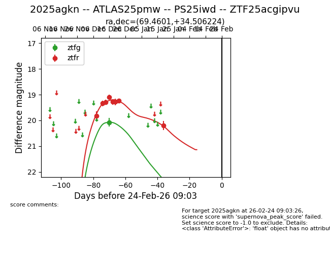
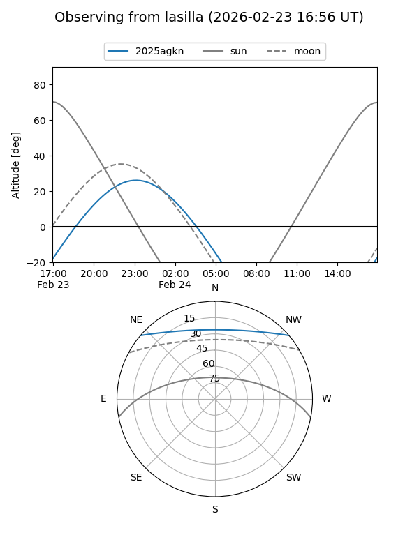
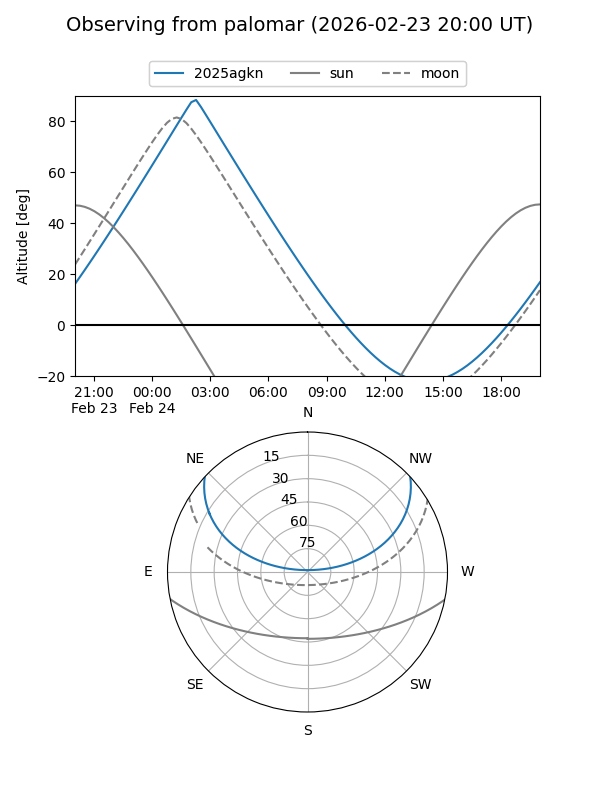
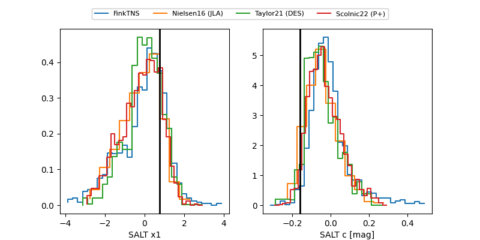

2025agkn
Target 2025agkn at 2026-01-21 04:56
Aliases and brokers:
FINK: link
Lasair: link
ALeRCE: link
TNS: link
YSE: link
alt names
ZTF25acgipvu (ztf,fink_ztf)
2025agkn (tns,yse)
ATLAS25pmw (atlas)
PS25iwd (panstarrs)
Coordinates:
equatorial (ra, dec) = 69.4601,+34.50622
equatorial (HMS+DMS) = 04:37:50.43,+34:30:22.40
galactic (l, b) = (166.9882,-8.36084)
Flags:
Photometry:
last ztfg=20.07, ztfr=20.20
1 ztfg, 8 ztfr detections
Lightcurve

Visibility


Additional plots
